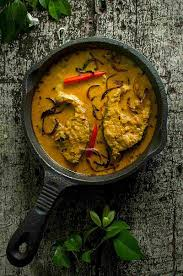

üêü Doi Maach (Fish in Yogurt Gravy)

Ingredients
- 4 pieces of Rohu or Katla fish
- 1 cup thick yogurt (whisked)
- 1 large onion (grated or paste)
- 1 tbsp ginger-garlic paste
- 2 green chilies (slit)
- 1/2 tsp turmeric powder
- 1 tsp red chili powder
- Salt to taste
- 1 tsp sugar
- 1/2 tsp garam masala
- 4 tbsp mustard oil
- 1 bay leaf, 2 green cardamoms, 2 cloves, 1 small cinnamon stick
Instructions
- Rub fish pieces with salt and turmeric. Fry lightly in mustard oil. Set aside.
- In the same oil, add bay leaf, cardamom, clove, and cinnamon.
- Add grated onion and sauté until golden. Add ginger-garlic paste and cook well.
- Add turmeric, chili powder, and sugar. Mix in the whisked yogurt slowly, stirring constantly.
- Once the masala is well-cooked, add the fish pieces and green chilies.
- Add 1/2 cup warm water and simmer covered for 10 minutes.
- Sprinkle garam masala and turn off the heat.
Serve With
- Steamed basmati rice
- Jeera rice or ghee rice
üí° Tip: Use fresh, thick curd to avoid curdling, and fry the fish lightly to keep it soft.